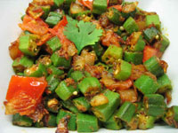

Bhindi Masala

Ingredients
2 pounds bhindi
2 onions (chopped)
1 tblsp ginger garlic paste
1 tblsp coriander powder
1 tsp cumin seeds
1 tsp red chilly powder
1 tsp garam masala powder
1 tsp amchur powder
1/4 tsp turmeric powder
salt to taste
oil
How to make
Wash and cut bhindi in halves.
Heat oil in a wok or kadai.Add cumin seeds and let it splutter.
Add chopped onions and ginger garlic paste.Fry till golden brown.
Now add cut bhindi with rest off the spices and stir well.
Cook it on medium flame and keep stirring it ocassionaly so it does not stick at bottom.
Keep feying till bhindis are cooked.
Serve bhindi masala hot with chapatis.
Chapati

Ingredients
2 cups Wheat Flour (Gehun Ka Atta)
Water as per requirement
How to make
Knead soft dough with above ingredients.
Leave it for atleast 30 minutes.
Break off to a table tennis - ball sized (even smaller) bit of dough.
Roll with help of dry flour to a thin round.
Roll as thin as possible.
Heat tawa and place phulka on it.
When dry on one side, turn it.
When brown spots appear on second side, turn again.
Use a kitchen towel and lightly press the phulka, rotating at same time, it will puff.
Make as crisp as desired.
Serve hot.